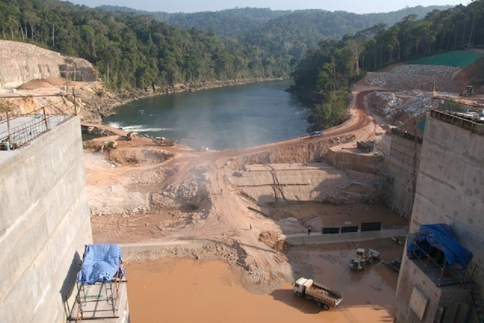
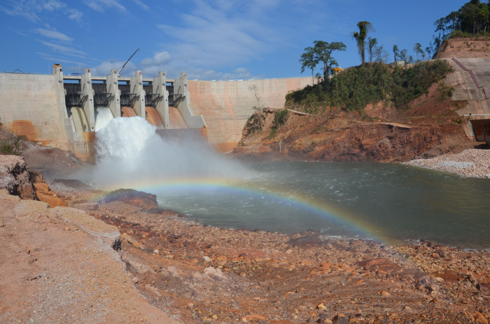
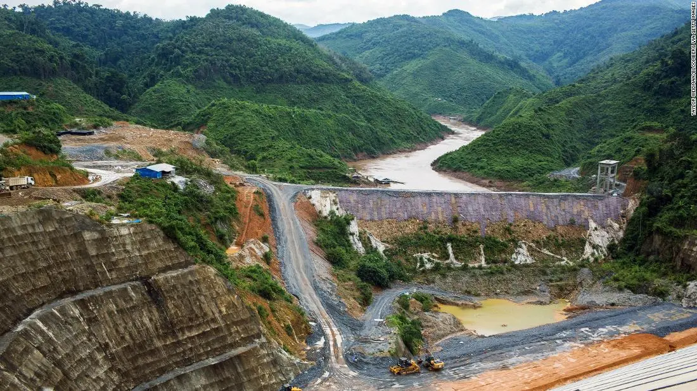
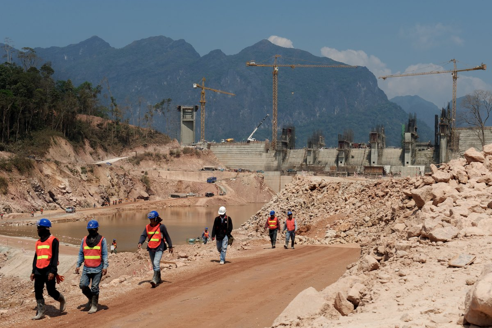

Hydropower Dam Project

SK Corporation (BK Construction) recently completed work on schedule and on budget at the US$1.3 Billion Nam Theun 2 (NT2)Hydropower Dam Project.In 2010, revenue generated from the NT2 project was being used to benefit education, health care, rural development and environmental protection programs in the Lao PDR.

The Theun Hinboun Hydropower Project (THPC) has been the guiding model of sustainable hydropower in Lao since starting commercial operations in 1998.SK Corporation (BK Construction) has been working with the THPC since day one and performs year round maintenance at this site

BK Construction is fully dedicated to the development and progress of Lao PDR as S. E. Asia leading provider of sustainable clean energy.

SK Corporation (BK Construction) crews at work on the Theun Hinboun Expansion Project (THXP) in the Na Hin Valley, 2010